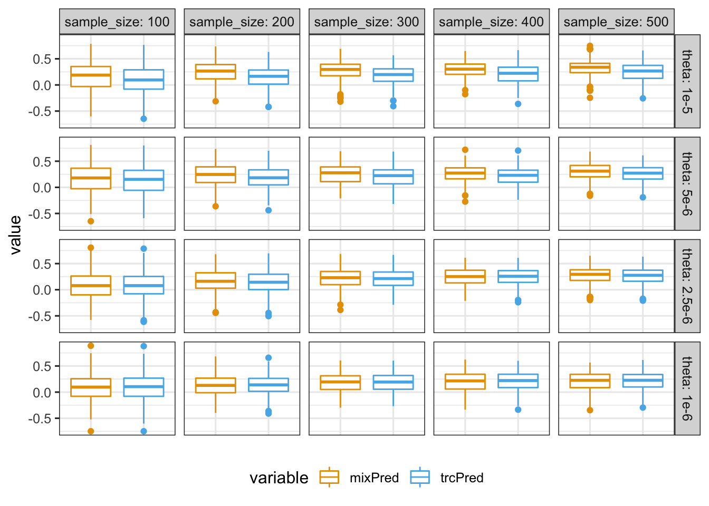
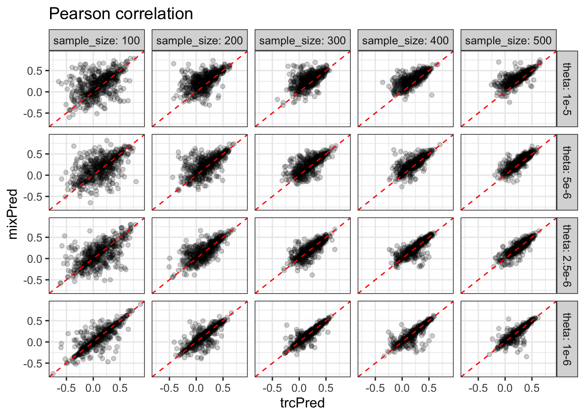
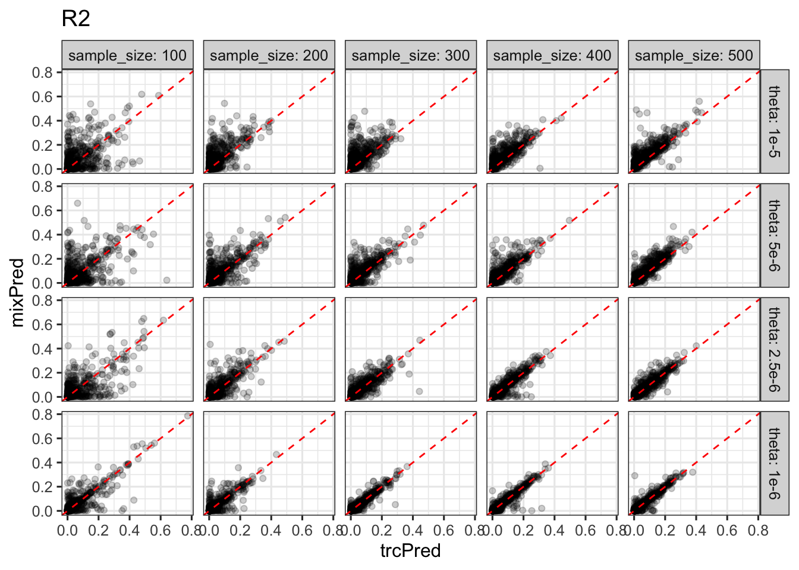
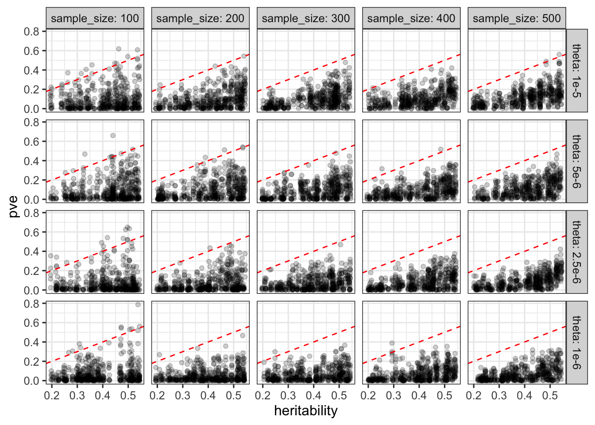
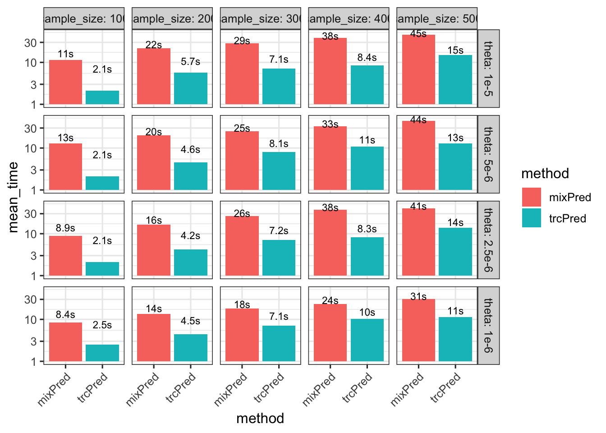

Results on mixPred runs on simulated data
rm(list = ls())
library(ggplot2)
theme_set(theme_bw(base_size = 12))
library(dplyr)
library(reshape2)
options(stringsAsFactors = FALSE)
source('../code/rlib_analysis.R')
datadir = '~/Desktop/mixqtl-pipeline-results/simulation-mixpred/'
cbPalette2 <- c("ascPred" = "#999999", "mixPred" = "#E69F00", "trcPred" = "#56B4E9")
source('https://gist.githubusercontent.com/liangyy/43912b3ecab5d10c89f9d4b2669871c9/raw/8151c6fe70e3d4ee43d9ce340ecc0eb65172e616/my_ggplot_theme.R')
th$panel.border = element_rect(colour = th$axis.line$colour)1 Load data
nt = 5; ra = 0.2
theta = c('1e-5', '5e-6', '2.5e-6', '1e-6')
theta = factor(theta, levels = theta)
sample_size = 1 : 5 * 100
methods = c(trcpred = 'trcPred', mixpred = 'mixPred')
df = data.frame()
for(t in theta) {
for(s in sample_size) {
for(m in names(methods)) {
# message(t, s, m)
filename = paste0(datadir, 'samplesize', s, '_x_theta', t, '/merge_', m,'-ntest5-ratio0.2.from1_to100.rds')
temp = readRDS(filename)
temp$method = methods[[m]]; temp$theta = t; temp$sample_size = s
df = rbind(df, temp)
}
}
}
df$theta = factor(df$theta, levels = theta)2 Prediction performance
df[is.na(df)] = 0
df_pcor = df %>% select(method, m, replicate, pearson_correlation, sample_size, theta) %>% dcast(sample_size + theta + m + replicate ~ method, value.var = 'pearson_correlation')
df_pve = df %>% select(method, m, replicate, pve, sample_size, theta) %>% dcast(sample_size + theta + m + replicate ~ method, value.var = 'pve')2.1 Overall
df_pcor %>% melt(id.vars = c('sample_size', 'theta', 'm', 'replicate')) %>% ggplot() + geom_boxplot(aes(x = variable, y = value, color = variable)) + facet_grid(theta ~ sample_size, labeller = label_both) + scale_color_manual(values=cbPalette2) +
theme(axis.title.x=element_blank(),
axis.text.x=element_blank(),
axis.ticks.x=element_blank()) +
theme(legend.position="bottom")
df_pve %>% melt(id.vars = c('sample_size', 'theta', 'm', 'replicate')) %>% ggplot() + geom_boxplot(aes(x = variable, y = value, color = variable)) + facet_grid(theta ~ sample_size, labeller = label_both) + scale_color_manual(values=cbPalette2) +
theme(axis.title.x=element_blank(),
axis.text.x=element_blank(),
axis.ticks.x=element_blank()) +
theme(legend.position="bottom")
2.2 mixPred vs. glmnet new
df_pcor %>% ggplot() + geom_point(aes(x = trcPred, y = mixPred), alpha = .2) + geom_abline(slope = 1, intercept = 0, color = 'red', linetype = 2) + facet_grid(theta ~ sample_size, labeller = label_both) + ggtitle('Pearson correlation')
df_pve %>% ggplot() + geom_point(aes(x = trcPred, y = mixPred), alpha = .2) + geom_abline(slope = 1, intercept = 0, color = 'red', linetype = 2) + facet_grid(theta ~ sample_size, labeller = label_both) + ggtitle('R2')
3 R2 vs. heritability
df = df %>% mutate(heritability = genetic_var / (genetic_var + 1 / 16))3.1 mixPred
df %>% filter(method == 'mixPred') %>% ggplot() + geom_point(aes(x = heritability, y = pve), alpha = .2) + geom_abline(slope = 1, intercept = 0, linetype = 2, color = 'red') + facet_grid(theta ~ sample_size, labeller = label_both) + theme(legend.position = c(0.8, 0.2))
4 CPU time
df_cpu = df %>% group_by(method, theta, sample_size) %>% summarize(mean_time = mean(user.self), median_time = median(user.self))
df_cpu %>% ggplot() + geom_bar(aes(x = method, y = mean_time, fill = method), stat = 'identity') + facet_grid(theta ~ sample_size, labeller = label_both) + theme(axis.text.x = element_text(angle = 45, hjust = 1)) + scale_y_log10() + geom_text(aes(x = method, y = mean_time + 5, label = paste0('', signif(mean_time, digits = 2), 's')), size = 3)
5 Summary with TRC and mixPred (for main text)
source('https://gist.githubusercontent.com/liangyy/43912b3ecab5d10c89f9d4b2669871c9/raw/8151c6fe70e3d4ee43d9ce340ecc0eb65172e616/my_ggplot_theme.R')
th$panel.border = element_rect(colour = th$axis.line$colour)
sample_sizes = c(100, 300, 500)
thetas = c('1e-5', '2.5e-6')
sub = df_pcor %>% filter(sample_size %in% sample_sizes, theta %in% thetas) %>% melt(id.vars = c('sample_size', 'theta', 'm', 'replicate'))
sub$variable = as.character(sub$variable)
p = sub %>% filter(variable %in% c('trcPred', 'mixPred')) %>% ggplot() + geom_violin(aes(x = variable, y = value, fill = variable), alpha = .5) + geom_boxplot(aes(x = variable, y = value, fill = variable), width = .2) + facet_grid(sample_size ~ theta, labeller = label_both) + scale_fill_manual(values=cbPalette2) +
# theme(axis.title.x=element_blank(),
# axis.text.x=element_blank(),
# axis.ticks.x=element_blank()) +
theme(legend.position="bottom") # + ggtitle('Pearson correlation')
p = p + th
p = p + ylab('Pearson correlation on test data') + xlab('Method') + theme(aspect.ratio = 1)
ggsave('../output/grid_sim-multi_0613_prediction_pearson.png', p, height = 5.5, width = 3.5)p = df_pcor %>% filter(sample_size %in% sample_sizes, theta %in% thetas) %>% ggplot(aes(y = mixPred, x = trcPred)) + geom_point(alpha=.1) + geom_abline(slope = 1, intercept = 0, color = 'gray', size = .3) + facet_grid(sample_size~theta, labeller = label_both) + geom_density2d(color = 'gray', bins = 8, size = .3)# + ggtitle('Pearson correlation (pairwise comparison)')
p = p + th
p = p + ylab('Pearson correlation in mixPred') + xlab('Pearson correlation in trcPred') + theme(axis.text.x=element_text(angle = 90, hjust = .5, vjust = .5)) + coord_equal()
ggsave('../output/grid_sim-multi_0613_prediction_pearson_pair.png', p, height = 5.5, width = 3.5)sub_rt = df_cpu
sub_rt$method = as.character(sub_rt$method)
p = sub_rt %>% filter(sample_size %in% sample_sizes, theta %in% thetas) %>% ggplot() + geom_bar(aes(x = method, y = mean_time, fill = method), stat = 'identity') + facet_grid(sample_size~theta, labeller = label_both) + theme(axis.text.x = element_text(angle = 45, hjust = 1)) + scale_fill_manual(values=cbPalette2)
p = p + th
ggsave('../output/grid_sim-multi_0613_prediction_runtime.png', p, width = 5, height = 6)6 Summary with TRC and mixPred (full grid for supp)
sample_sizes = unique(df_pcor$sample_size) # c(100, 300, 500)
thetas = unique(df_pcor$theta) # c('1e-5', '2.5e-6')
sub = df_pcor %>% filter(sample_size %in% sample_sizes, theta %in% thetas) %>% melt(id.vars = c('sample_size', 'theta', 'm', 'replicate'))
sub$variable = as.character(sub$variable)
p = sub %>% filter(variable %in% c('trcPred', 'mixPred')) %>% ggplot() + geom_violin(aes(x = variable, y = value, fill = variable), alpha = .5) + geom_boxplot(aes(x = variable, y = value, fill = variable), width = .2) + facet_grid(sample_size ~ theta) + scale_fill_manual(values=cbPalette2) +
# theme(axis.title.x=element_blank(),
# axis.text.x=element_blank(),
# axis.ticks.x=element_blank()) +
theme(legend.position="bottom") # + ggtitle('Pearson correlation')
p = p + th
p = p + ylab('Pearson correlation on test data') + xlab('Method') + theme(aspect.ratio = 1) + theme(axis.text.x=element_text(angle = 45, hjust = 1, vjust = 1))
ggsave('../output/grid_sim-multi_0613_prediction_pearson_full.png', p, height = 6.5, width = 5.5)p = df_pcor %>% filter(sample_size %in% sample_sizes, theta %in% thetas) %>% ggplot(aes(y = mixPred, x = trcPred)) + geom_point(alpha=.1) + geom_abline(slope = 1, intercept = 0, color = 'gray', size = .3) + facet_grid(sample_size~theta, labeller = label_both) + geom_density2d(color = 'gray', bins = 8, size = .3)# + ggtitle('Pearson correlation (pairwise comparison)')
p = p + th
p = p + ylab('Pearson correlation in mixPred') + xlab('Pearson correlation in trcPred') + theme(axis.text.x=element_text(angle = 90, hjust = 1, vjust = 1)) + coord_equal()
ggsave('../output/grid_sim-multi_0613_prediction_pearson_pair_full.png', p, height = 6.5, width = 5.5)